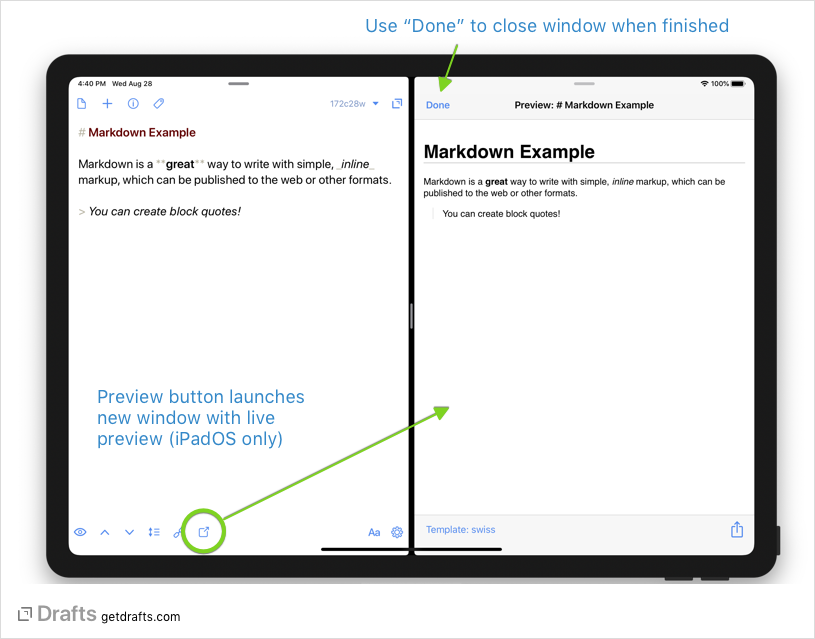
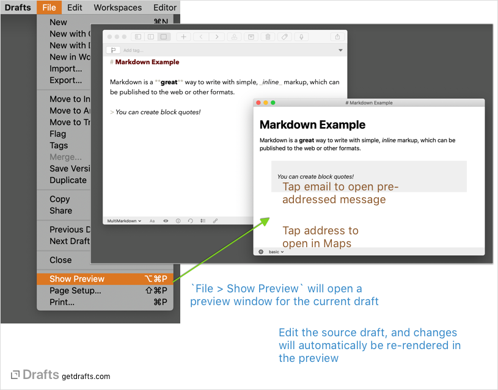

Previews
Often content in Drafts is editing in Markdown and ultimately intended to be rendered as HTML through a Markdown parser. It is sometimes useful to get a preview of how that content will appear when rendered, so Drafts offers customizable ways to preview your HTML output.
Drafts offers an HTML Preview action step to preview HTML generated from a template in a browser window within an action. HTML Preview steps in actions are static and modal. They are still very useful, and can be used on the iPhone, but do not live update when changes are made to a draft.
On Mac and iPadOS, Drafts also offers the ability to open a live HTML preview of the content of a draft in a separate window. When you open a preview window, it will update when changes to a draft are saved, always keeping a current rendering.
Table of Contents
Opening a Preview Window
 
To open a preview window for the current draft:
- macOS: Select
File > Show Previewfrom the main menu. - iPadOS: Tap the preview button in the bottom toolbar row of the editor.
Preview Templates
Preview windows offer the ability to select which template to use when previewing your Drafts.
Drafts offers three built-in template styles (Basic, Foghorn, Swiss) for use in previews which have styling for commonly used Markdown tags, but the preview can also be based on custom templates stored in iCloud Drive/Drafts/Library/Templates. A typical use case for a custom template it to create a style that matches a blog website template to get a preview that will mimic how the Markdown will be rendered when published.
These templates use the same Template engine and tags used by actions. Typically a preview template should generate a fully-formed HTML document and can load remote resources (stylesheets, javascript, etc.).
Using Remote and Local Assets
Previews have full access to the web, so external images and other assets which exist at publicly accessible http(s) URLs, can be referenced as normal in your HTML and those remote resources will be loaded when the preview is displayed.
Previews can also incorporate local images, javascript, stylesheets and other file-based assets in previews by placing those assets in the a folder at iCloud Drive/Drafts/Library/Previews/. Place the assets you wish to incorporate in this folder, or sub-folders of that folder, and you can reference those assets via relative paths in your HTML preview templates.
For example, if you stored an image at iCloud Drive/Drafts/Library/Previews/images/my-image.jpg, you could embed that using the HTML tag <img src="images/my-image.jpg">
Marked App Integration
If you are a user of the popular Marked Markdown preview app for Mac, you can enable support for live updating your edits in Drafts to the Marked Streaming Preview feature.
To enabled Markdown support, open Drafts’ Preferences, and check the “Enable Marked Streaming Preview support” checkbox on the General tab.
The streaming preview window can be opened directly in the Marked app, or using the Open Marked Streaming Preview action in Drafts.